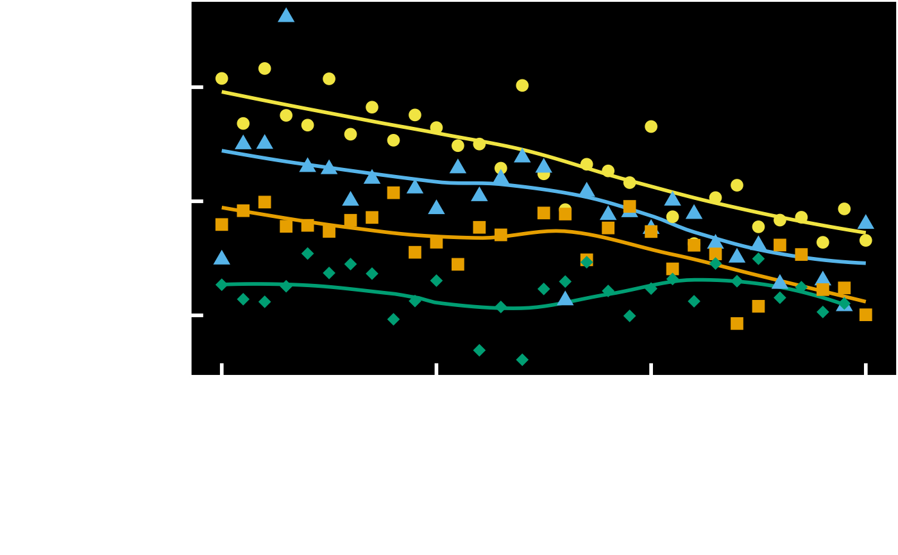
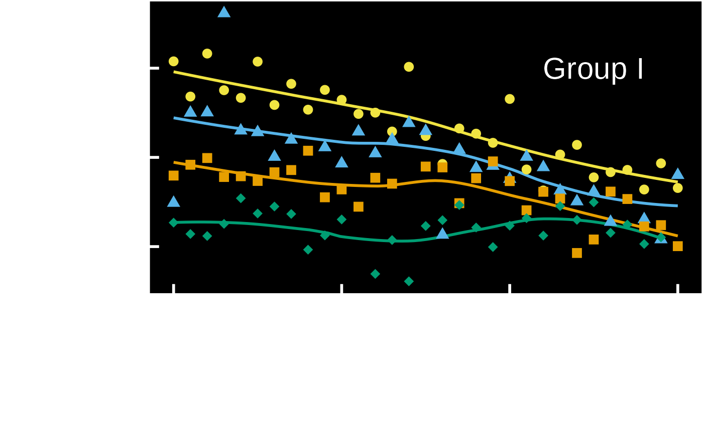
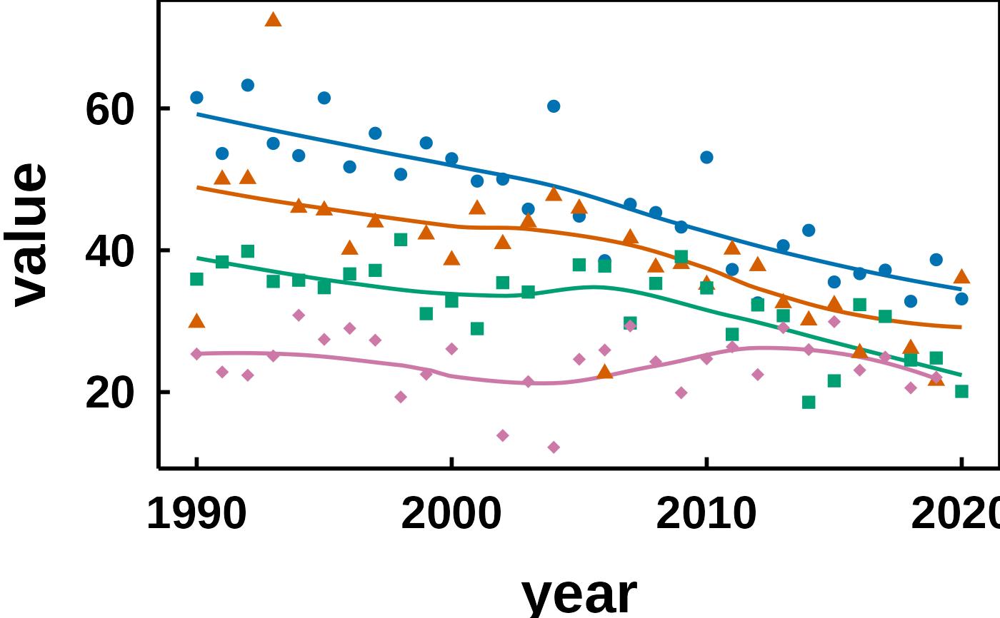

You already know the two-step shape of a hvtiPlotR figure: a constructor
prepares and validates the data, plot() hands back a bare ggplot, and you
finish it with +. Across a deck that finishing step is the same few lines
on every slide, and copying them plot by plot is how one figure quietly
drifts out of step with the rest.
hv_ppt_series() bundles the finishing step into a single object you add
once per plot. It carries the PowerPoint theme, a colour scale and a
matching shape scale, so a whole deck takes its look from one definition.
Usage
hv_ppt_series(
mode = c("dark", "light"),
colours = NULL,
shapes = NULL,
name = NULL,
...
)Arguments
- mode
Slide background the plot will sit on.
"dark"pairs withtheme_hv_ppt_dark(),"light"withtheme_hv_ppt_light().- colours
Character vector of colours, one per group in order. Default
NULLuses the Okabe-Ito ordering formode.- shapes
Numeric vector of ggplot2 point shapes, one per group in order. Default
NULLuses solid glyphs first.- name
Title used by both scales, so a drawn legend merges into one. Default
NULLdraws no title. Unused while the legend is off.- ...
Additional named arguments forwarded to the underlying
theme_hv_ppt_*()call, e.g.base_size = 28orlegend.position = "top".
Value
A list of ggplot2 components: a theme, a colour scale and a shape
scale. Add it to a ggplot object with +.
Details
The return value is a plain list, and ggplot2's + unrolls a list element
by element, so it composes just like a theme:
A theme cannot do this job alone. ggplot2::theme() governs the non-data
ink, the text, panel, grid and ticks, and nothing that draws from the data,
so no theme element sets a series colour. Nor can a layer be smuggled in
through the theme's ..., which is forwarded to ggplot2::theme() and
errors on anything that is not a theme element. Series colour and shape
live in the scales, and those are what this function adds alongside the
theme.
Colour and shape carry the same variable
Both scales map the grouping column, so each series is told apart twice.
That redundancy is the point. A projector in a dark room flattens colour
differences that read cleanly on your monitor, and a black and white
handout drops them entirely, but the shapes survive both. The two scales
share name, so on the rare draft that does draw a legend, ggplot2 merges
them into one instead of stacking two.
The default colours are the Okabe-Ito colourblind-safe palette, ordered for
the background: high-luminance hues first on a dark slide, darker ones
first on a light slide. These are not CORR brand colours. Pass colours
when a deck calls for a specific set.
Six colours and six shapes are supplied, which covers a grouping variable of up to six levels. A discrete scale errors when it runs out of values, so pass longer vectors for a wider variable.
No legend, by house standard
Every theme_hv_*() sets legend.position = "none", and this decorator
leaves that alone. CORR figures name the series where the series sits, on a
slide and in a manuscript alike, so the reader's eye never travels out to a
key and back.
Annotation is drawn in the theme's ink, not in the colour of the series it
names: white on a dark slide, black on a light slide and in a manuscript.
That is the ink the theme already gives the axis text and axis lines, so
one ink for every label makes the annotation read as part of the figure's
frame rather than as one more series.
plot(trends) +
hv_ppt_series("dark") +
ggplot2::annotate("text", x = 2015, y = 60, label = "Group I",
colour = "white", size = 8)The shape scale still earns its place with no legend drawn. Where two curves cross, the plotted summary points are what tells them apart.
Pass legend.position = "top" through ... when a working draft wants a
quick key, or hand the finished plot to hv_legend_inside() to drop one
into an empty corner of the panel.
Grouped plots only
The scales take effect on a plot that maps colour to a grouping column,
which means a constructor called with group_col. On an ungrouped plot
they sit unused and only the theme applies. There is nothing to fix in that
case; a single series needs no palette. To colour the raw observations on an
ungrouped plot, add your own layer after the decorator, for example
+ ggplot2::geom_point(colour = "yellow").
See also
hv_ppt_palette() for the colours themselves;
theme_hv_ppt_dark() and theme_hv_ppt_light() for the themes
this wraps; hv_legend_inside() when a draft does want a key;
save_ppt() to export the finished plots to editable PowerPoint slides.
Examples
dta <- sample_trends_data(n = 400, seed = 42)
trends <- hv_trends(dta, x_col = "year", y_col = "value",
group_col = "group")
# One decorator, added to every plot in the deck.
ppt <- hv_ppt_series(mode = "dark")
plot(trends) + ppt

# House style carries no legend, so name the series where it sits. The
# label takes the same ink as the axis: white on a dark slide, black on a
# light one.
plot(trends) + ppt +
ggplot2::annotate("text", x = 2015, y = 60, label = "Group I",
colour = "white", size = 8)

# A light template, larger type, and your own colours.
plot(trends) +
hv_ppt_series(
mode = "light",
colours = c("#0072B2", "#D55E00", "#009E73", "#CC79A7"),
base_size = 24
)
